3DFeat-Net: Weakly Supervised Local 3D Features for Point Cloud Registration (2018)
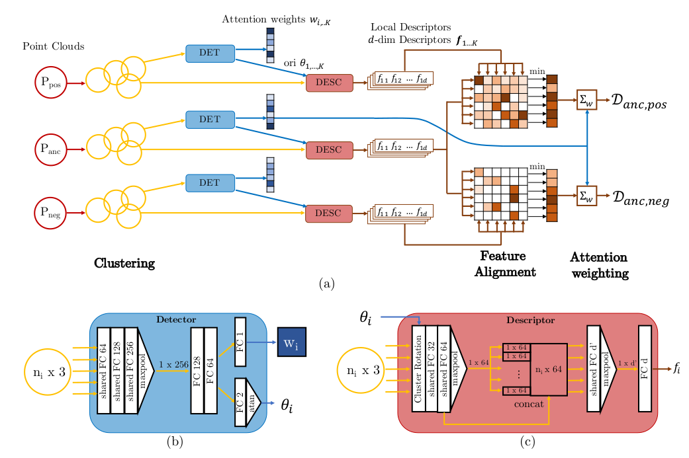
3D Point Cloud Registration with Multi-Scale Architecture and Self-supervised Fine-tuning (2021)
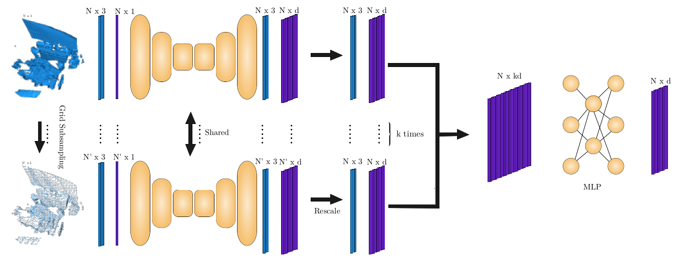
D3Feat: Joint Learning of Dense Detection and Description of 3D Local Features (2020)
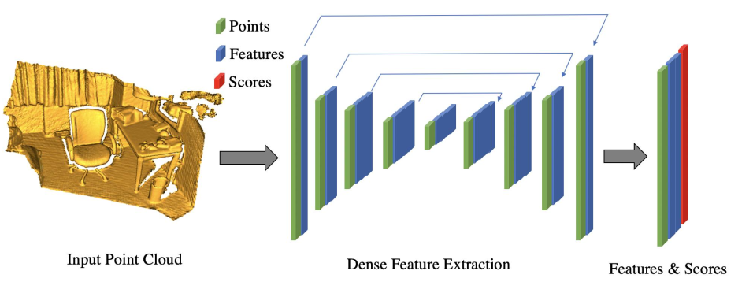
Distinctive 3D local deep descriptors (2020)
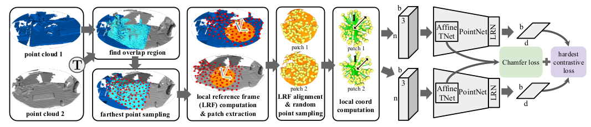
Fully Convolutional Geometric Features
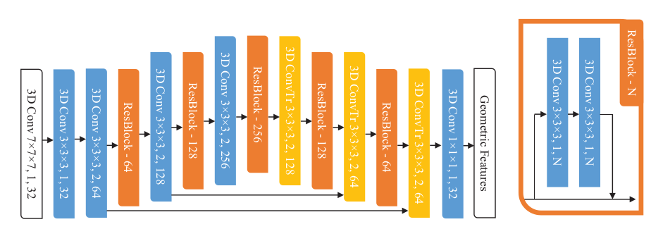
Generalisable and distinctive 3D local deep descriptors for point cloud registration (2021) ==Gedi==
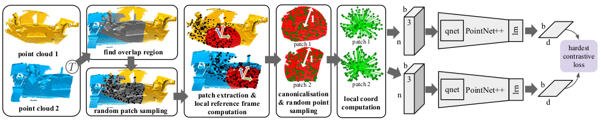
CGF-Learning Compact Geometric Features (2017)
Learning local shape descriptors from part correspondences with multi-view convolutional networks (2017) LMVCNN
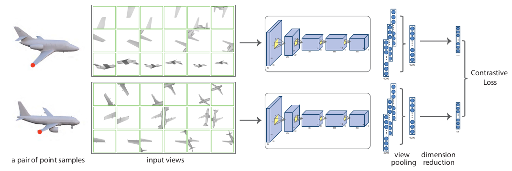
End-to-End Learning Local Multi-view Descriptors for 3D Point Clouds (2020)
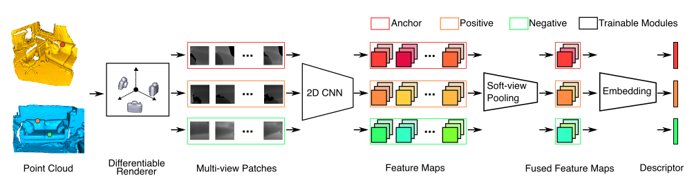
Performance Evaluation of 3D Local Feature Descriptors (2015)
PPF-FoldNet: Unsupervised Learning of Rotation Invariant 3D Local Descriptors (2018)
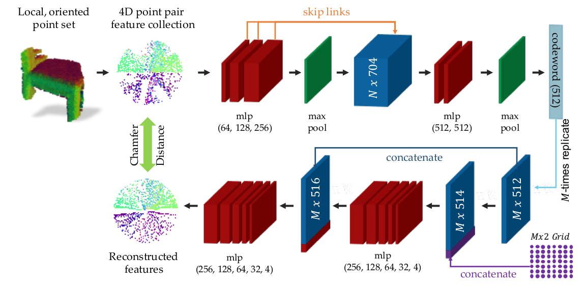
PPFNet: Global Context Aware Local Features for Robust 3D Point Matching (2018)
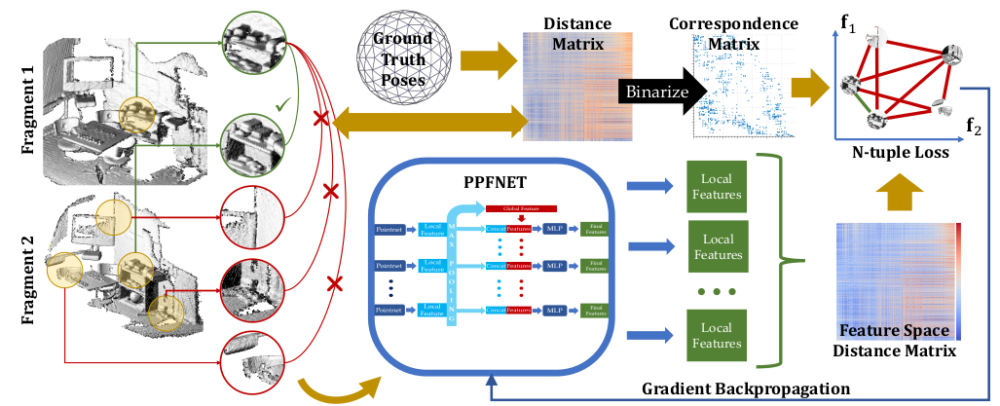
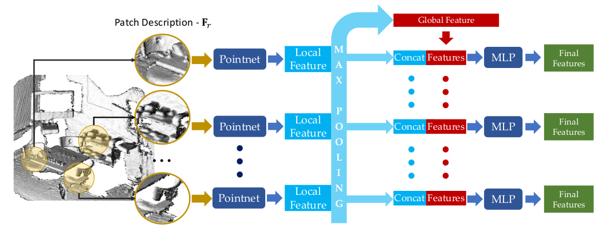
PREDATOR : Registration of 3D Point Clouds with Low Overlap (2021)
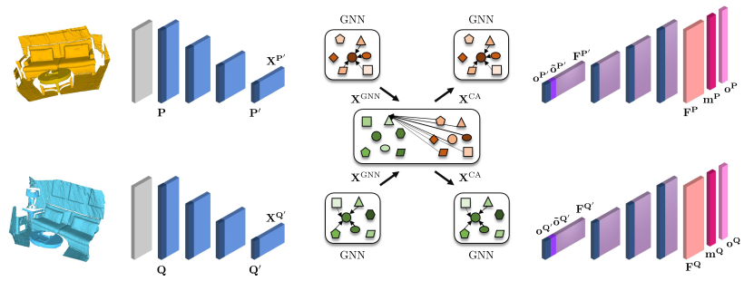
SpinNet: Learning a General Surface Descriptor for 3D Point Cloud Registration (2021)
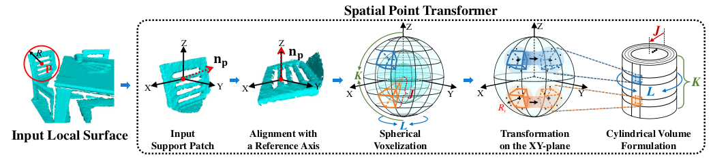
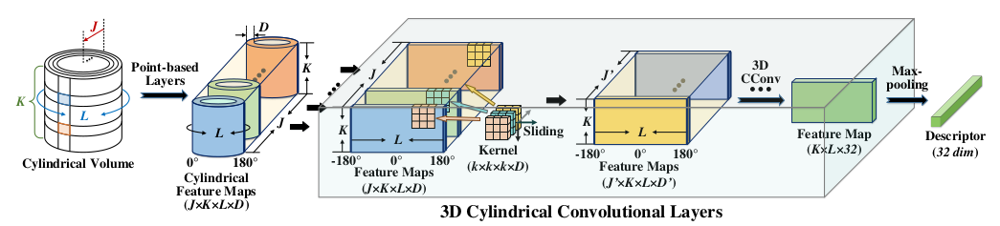
The Perfect Match: 3D Point Cloud Matching with Smoothed Densities (2019)
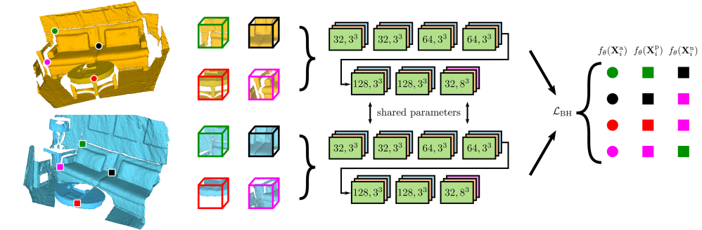
3DRegNet: A Deep Neural Network for 3D Point Registration (2020)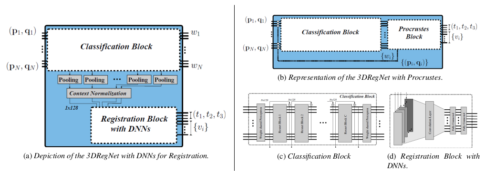
Deep Closest Point: Learning Representations for Point Cloud Registration (2019)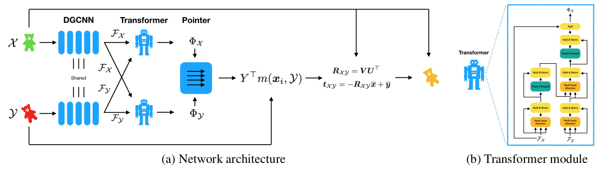
Deep Global Registration (2020)
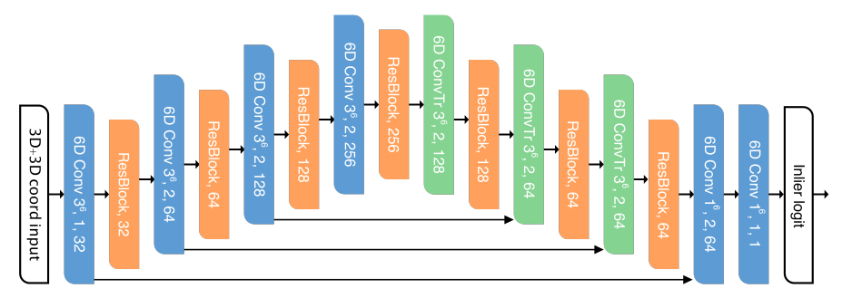
FINet: Dual Branches Feature Interaction for Partial-to-Partial Point Cloud Registration (2021)
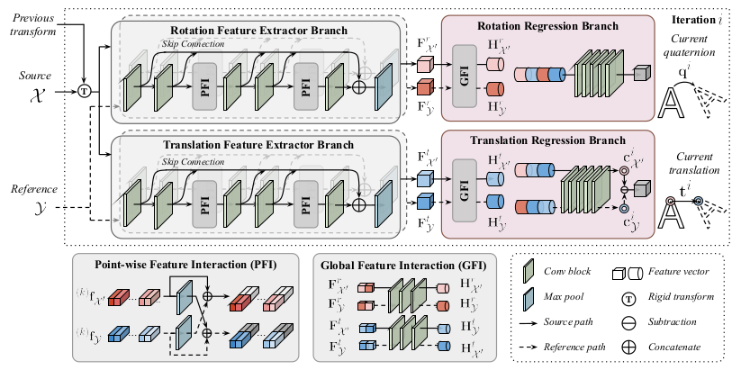
Learning 3D-3D Correspondences for One-shot Partial-to-partial Registration (2020)
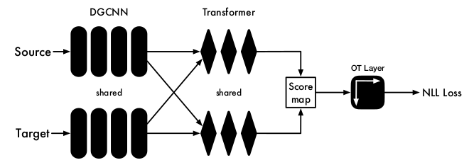
PointDSC: Robust Point Cloud Registration using Deep Spatial Consistency (2021)
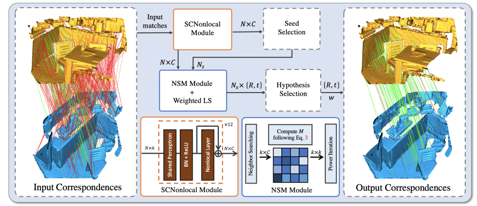
PRNet: Self-Supervised Learning for Partial-to-Partial Registration (2019)
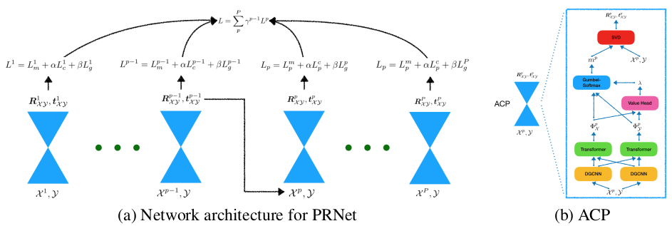
PointNetLK: Robust & Efficient Point Cloud Registration using PointNet (2019)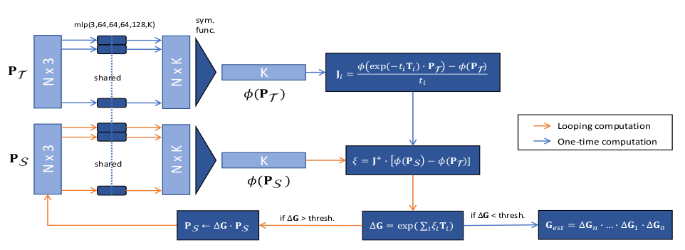
RPM-Net: Robust Point Matching using Learned Features (2020)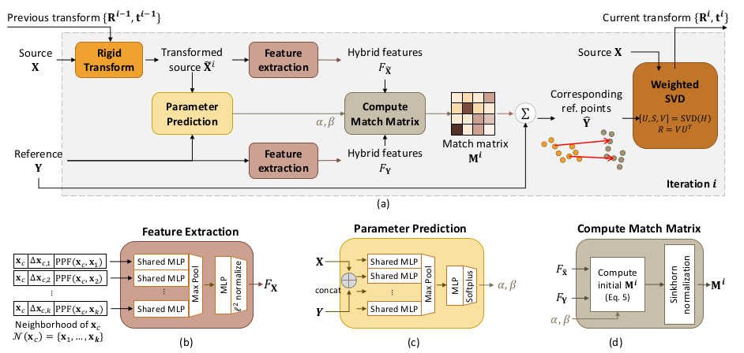